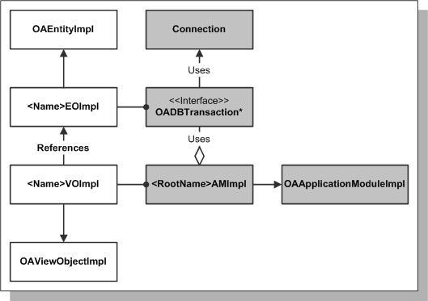
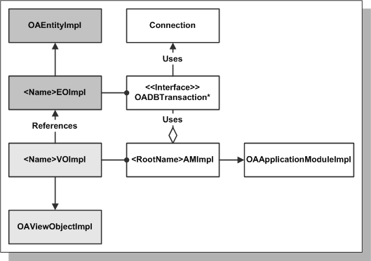
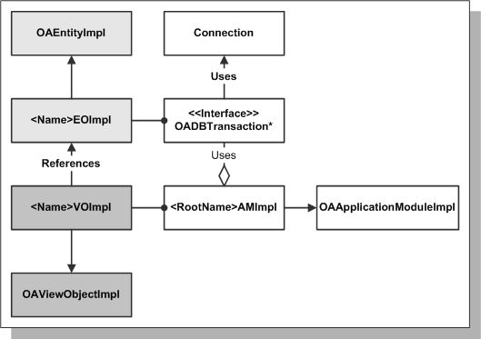
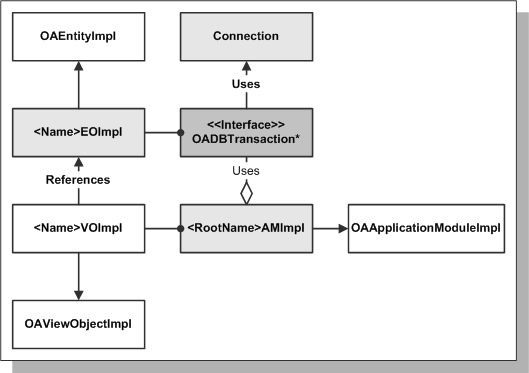
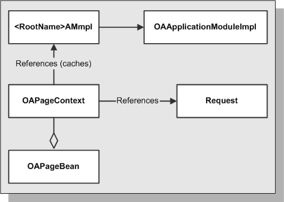
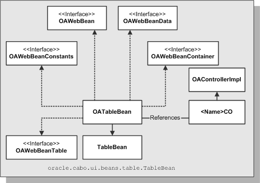
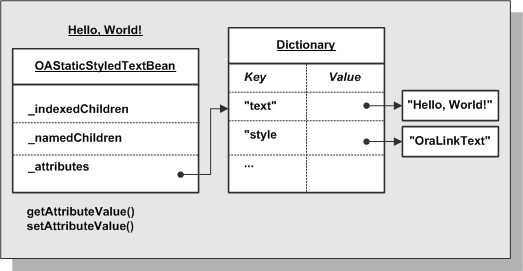

Page基础
在浏览器看来，OA Framework页面与其它web页面一样，被渲染为HTML。
在中间层中，页面是由内存中层级分布的Javabeans组成——非常像传统的Java客户端UI。每个UI构件，比如按钮、表格、tab、商标图像等，被渲染为页面中对应的构件。
浏览器向一个页面发出请求时，OA Framework读取页面定义的元数据创建web bean结构。每个bean与一个UI控制器关联，OA Framework调用你编写的代码初始化页面。页面处理完成后，OA Framework将web bean结构交给UIX框架处理以生成发送给浏览器的HTML。
当浏览器发出一个表单提请求时，OA Framework重新创建bean及其层次结构（只在必要的时候才重新创建，通常这些bean是被缓存的，只在特定的情况下才重新创建），然后调用为page bean编写的事件处理代码。当页面处理完成后，页面HTML重新生成并发送给浏览器。
OA Framework MVC架构：

模型Model
模型包括下层的数据和应用业务逻辑。它也提花了现实世界对象和应用服务间的抽像层。
应用模块Application Modules
BC4j应用模块本质上是一个容器，它管理和提供对“相关“BC4J模型对象的访问。这里的“相关”指的是同一个任务中的参与者。比如所有的BC4J对象在同一个任务中参与同一个事务——即使对应的用户界面需要用户访问多个页面。
应用模块：

应用模块是oracle.apps.fnd.framework.server.OAApplicationModuleImpl类的子类。
每个OAFramework 页都有一个根（root）应用模块，它与最顶层的页面区域（page region）关联。根应用模块提供事务环境和连接数据库。
-
如果多个页面参与同一个物理或虚拟事务，它们应该共享相同的根应用模块。
-
如果一个页面功能不依赖于其它东西，它需要拥有自己的应用模块。
注意： 一个根应用模块可能包含一个或多个嵌套的应用模块，可以嵌套任意多的层次。这种情况下，根应用模块可以访问它包含的子对象的数据和对象，所有子对象共享根应用模块的事务。你可以在创建需要重用的与数据库操作相关的UI区域时使用这个功能。
实体对象（Entity Objects）和关联对象（Association Objects）
BC4J实体对象包含了业务规则（校验、动作等）与数据库表中的一行关联。
注意： 实体也可以基于视图、同义词、快照而定义。
OA Framework支持Java和PL/SQL实体。
实体对象：

多数实体是oracle.aps.fnd.framework.server.OAEntityImpl的子类（PL/SQL继承于特殊版本的OAEntityImpl）。
表和实体对象一一对象，所有实体应该包含与之关联的表的所有列。实体对象使用映射了它的属性和数据库列，并自动实现了查询、插入、更新、删除等操作。多数情况下，我们只需要添加校验逻辑。
实体对象可以用于任何程序（不限于OA Framework）。
关联对象Association Objects
用于定义实体间的关系。
视图对象（View Objects）和视图链接（View Links）
BC4J视图对象处理数据库查询。查询执行后，视图对象提供了访问它的结果集的功能。结果集包含了一个或多个视图行，视图行与数据库查询的行相对应。
视图对象：

所有的视图对象都是oracle.apps.fnd.framework.server.OAViewObjectImpl类的子类。
视图对象可以配置为使用下面的策略查询数据：
-
它的属性映射到简单的SQL语句的列（通常用于小的只读的视图对象）
-
它的属性映射到实体对象的属性（用于插入、更新和删除实体）
-
一些属性映射到实体对象，一些直接映射到SQL（用于增加实体临时数据，这些数据不能通过实体获得，比如计算值或用于UI显示需要）
在OA Framework应用中，将在下面情况下使用视图对象：
-
呈现用于优化用户界面细节的数据。如果用户界面支持实体的插入、更新、删除，你将通过视图对象执行这些操作。
-
为poplists、lists of values和其它UI组件创建简单的查询。
-
为业务逻辑创建有效的“校验查询（validation queries）”。比如，在定单处理时使用一个校验视图对象获得最大可以购买的商品数量。
可以为视图对象编写代码用于实现复合查询或查询时的数据绑定（以便视图对象知道怎样“查询”自己）。
视图链接View Links
与实体对象类似，也可以为视图对象建立关联，称为视图链接（view links）。比如可以在定单头视图对象和定单内容间建立视图链接对象。这可以用于在运行时访问定单头时自动查询定单内容。
OADBTransaction
OADBTransaction：

注意： 准备的来说这个图应该要包含实现类oracle.apps.fnd.framework.server.OADBTransactionImpl替代oracle.apps.fnd.framework.OADBTransaction接口。
如图所示，OADBTransaction扮演的是模型中的中心角色，因为它与一个根应用模块关联，管理JDBC连接/数据库会话，直接拥有你创建的任何实体（根应用模块拥有的视图对象中的行指向实体对象）。可以使用OADBTransaction在模型代码中完成下面的操作：
-
创建一个语句执行PL/SQL函数和存储过程
-
访问应用会话级环境信息（session-level Application context information），比如：用户名、id、当前责任（resposibility）等。
-
访问一个oracle.apps.fnd.framework.OANLSServices对象，如果你需要执行NLS操作，比如转换服务器时间到用户日期/时间等。
可以通过根应用模块访问OADBTransaction。
视图
视图格式化当前模型数据给用户。
定义页面
在Oracle Applications开发时，将使用XML页面定义文件。当产品发布后，OA Framework从数据库获取页面定义。
使用JDeveloper定义的页面（pages）由区域（regions）和条目（items）组成。
-
条目是简单的构件，比如按钮、输入域、图像等，它不包含子构件。
-
区域是容器对象它可以包含条目和其它区域。比如区域包含文件头（headers）、表格和特别的布局组件（layout components）。
-
定义的每个区域和条目都有style属性，它告诉OA Framework使用哪个web bean对象来描述它。比如，如果你定义区域的style属性为“table”，OA Framework将使用oracle.apps.fnd.framework.webui.beans.table.OATableBean。
-
所有页面必须有一个单一的top-level region（通常称为“root region”）它的style为pageLayout。它将使用oracle.apps.fnd.framework.webui.beans.layout.OAPageLayoutBean。
-
regions和items显示在JDeveloper page tree中的顺序告诉了Framework将这些对象添加在什么位置。
属性集Attribute Sets
每个region或item通过使用attribute sets可以继承一组属性集合。attribute sets是一个被命名的属性的集合，可重用于任何UI对象，包括：regions，items和其它属性集。当使用attributes set创建UI时，你可以覆盖所继承的属性。
组件重用
如果需要在页面使用共同对象，可以简单的从它继承。
比如，可以创建一个通用的region。新建region时，将新region的Extends属性设置为通用region的命名。
注意： 共享的通用region在引用它的page中是不可编辑的，属于它的选项目在JDeveloper中将显示为灰色。
数据源绑定
对于需要与数据库交互的bean，你需要指定数据源，将它绑定到View Instance Name，并关联好View Attribute Name。这个绑定是至关重要的，因为OA Framework使用它获取数据，并将用户输入的数据写入下面的视图对象。
-
View Instance Name指向当前上下文环境中包含应用模块中的视图对象（所有视图对象“生活“于一个应用模块中，在包含它的容器对象中有一个实例变量名）。比如，如果SuppliersVO视图对象，在页面的根应用模块中有一个实例变量“MySupVO”。
-
View Attribute Name指向视图对象中映射到数据库列的属性。
定义菜单
定义页面流
个性化页面
控制器
控制器响应用户动作控制应用流转。
控制器可以与视图中的region级的对象关联（任何实现oracle.apps.fnd.framework.webui.beans.OAWebBeanContainer的OA Framework web bean都可以与控制器关联）。
控制器是oracle.apps.fnd.framework.webui.OAControllerImpl的子类。
控制器代码的行为：
-
生成/初始化UI
-
中途截取或处理用户事件，比如按钮按下
请求处理
当浏览器向OA.jsp请求一个页面时：
-
oracle.apps.fnd.framework.webui.OAPageBean（OA Framework主页面处理类）根据请求的页面名称检查需要哪个根应用模块，并从应用模块池（application module pool）中取出。这个应用模块将为页面从JDBC连接池中获取连接和事务上下文。
-
用户会话校验；如果无效，将显示登录页面（这里是简化的说法，具体细节在Developer's Guid中有说明）。
-
如果用户有效，OAPageBean根据请求参数处理HTTP POST或GET。
处理GET请求
当浏览器发起GET请求一个page时（或你手工forward时），OA Framework使用描述的UI定义构建web bean层级结构：
-
OAPageBean调用页面的top-level pageLayout bean的processRequest()方法，然后进入web bean层级结构中继续递归调用来初始化web beans（包括任何相关的模型组件）。
-
每个web bean可以有自己的控制器，如果有就调用控制器的processRequest(OAPageContext pageContext, OAWebBean webBean)方法。这个方法可以用于构件或修改页面布局，设置web bean属性和执行任何手工的数据初始化工作（比如，打开页面时自动执行查询）。
-
一些复杂的web beans（比如：oracle.apps.fnd.framework.webui.beans.table.OATableBean和oracle.apps.fnd.framework.webui.beans.layout.OAPageLayoutBean）通过调用它们的prepareForRendering()（这个方法在JavaDoc中的说明）方法执行post-controller处理。
-
每个web bean调用它的子对象的processRequest()方法。
-
oracle.apps.fnd.framework.webui.OAPageBean将web bean结构传递给UIX渲染并发送给浏览器。
处理POST请求
当浏览器向服务器页面发出POST请求时：
-
OAPageBean检查web bean层级结构是否在内存中。如果没有它就像在GET请求中一样创建一个web bean层级结构。
-
OAPageBean调用整个层级结构中的web bean的processFormData(OAPageContext pageContext, OAWebBean webBean)方法，并将form中的数据写入模型（它在pageLayout region上调用processFormData()，然后在它的子对象上递归的调用processFormData()方法）。将form数据写入模型时将自动调用属性和实体级别（attribute and entity-level validations）的校验，如果抛出了任何校验异常，处理将停止，错误信息将显示给用户。
-
如果在执行processFormData()期间没有异常抛出，OAPageBean将使用与上面相同的方法在层级结构中的所有web bean上调用processFormRequest(OAPageContext pageContext, OAWebBean webBean)方法。这里给了你的控制器响应用户动作的机会。
-
如果没有JSP forward或redirect发出，或在执行processFormRequest()方法时没有异常被抛出。则页面刷新。
OAPageContext
当OA Framework收到一个OA.jsp请求时，OAPageBean创建一个oracle.apps.fnd.framework.webui.OAPageContext，这个类仅在页面处理过程中存在。上面描述的三个方法（processRequest()，processFormData()，processFormRequest()）都有一个OAPageContext参数，任何将要编写的控制器代码都使用了这个至关重要的类。

如上图所描述的，OAPageContext有指向request和根应用模块的引用。根据这个关系，OAPageContext被传递到每个控制器的响应处理方法中，你将看到如何在下面的通用任务中使用OAPageContext：
访问请求参数
可以使用getParameter(String name)方法读取请求参数。
技巧：
页面上的每个web bean（buttons，fields等等）传递给getParameter()的是你定义在页面上的唯一ID属性。比如，使用下面的代码可以得到用户是否按下了名为“GoButton”的按钮：
processFormRequest(OAPageContext pageContext, OAWebBean webBean){
if (pageContext.getParameter("GoButton") != null)
{
// The user pressed the "Go" button, do something...
}
}
访问根应用模块
OAPageContext缓存了根应用模块的引用，它可以访问视图对象和事务。如果需要访问应用模块，可以通过OAPageContext：
processFormRequest(OAPageContext pageContext, OAWebBean webBean){
OAApplicationModule am =
(OAApplicationModule)pageContext.getRootApplicationModule();
}
发出导航指令
使用方法告诉OA Framework执行JSP forward或客户端重定向。比如：
processFormRequest(OAPageContext pageContext, OAWebBean webBean){
if (pageContext.getParameter("CreateButton") != null)
{
// The user pressed the "Create Supplier" button, now perform a JSP forward to
// the "Create Supplier" page.
pageContext.setForwardURL("OA.jsp?page=/oracle/apps/dem/employee/webui/EmpDetailsPG",
null, OAWebBeanConstants.KEEP_MENU_CONTEXT, null, null, true, // Retain AM OAWebBeanConstants.ADD_BREAD_CRUMB_YES, // Show breadcrumbs OAWebBeanConstants.IGNORE_MESSAGES);
}
}
访问应用上下文信息
与模型中的OADBTransaction类似，OAPageContext可以访问servlet session级的Oracle Application上下文信息，如：用户名，ID，当前职责等。比如，下面的片段用于获取用户名：
processRequest(OAPageContext pageContext, OAWebBean webBean){
String userName = pageContext.getUserName();}
Web Bean架构
所有OA Framework web beans都与UIX framework中的bean对应。比如，OATableBean继承自oracle.cabo.ui.beans.table.TableBean（“cabo"是UIX framework早期的名字，包定义仍然使用了旧名）。
每个OA Framework web bean都实现了一组接口，这些接口实现了OA Framework添加到基础的UIX beans上的行为。
-
oracle.apps.fnd.framework.webui.beans.OAWebBean定义了所有web beans的通用行为（比如，其中在这里定义的关键的行为有processRequest，processFormData，processFormRequest方法，一些beans自己实现了这些方法）。
-
oracle.apps.fnd.framework.webui.OAWebBeanConstants用于视图和控制器的常量集合。
-
oracle.apps.fnd.framework.webui.beans.OAWebBeanData定义通用的个性化定义和数据源管理行为
-
oracle.apps.fnd.framework.webui.beans.OAWebBeanContainer定义所有可以作为其它web beans容器的web beans的特性。比如，所有layout web beans都实现了这个接口。只有实现了这个接口的beans才可以与控制器关联。
-
OAWebBean
定义了bean在OA Framework上下文环境中的内在特性。比如，OATableBean实现的oracle.apps.fnd.framework.webui.beans.OAWebBeanTable接口。
web bean例子（OATableBean）：

内部Bean结构
每个web bean自己包含了下列的信息：
-
_indexedChildren子web beans
-
_namedChildren子web beans特殊行为的UIX标记。
-
_attributes web bean的特性（属性描述），下表的图表描述
描述web bean使用Dictionary保存键值对属性：

数据绑定值
与上面的图表描述的情况不同，OA Framework web bean的attributes实际上是用数据绑定值实现的，这意味着它是由下层的数据源提供的，在组件被渲染时才被获取。后面将看到如何定义用户自定义绑定值。
渲染
在页面渲染时，UIX framework处理web bean层级对象产生页面的HTML代码。
对于每个web bean属性，UIX调用它的getAttributeValue()方法。并传递给它一个渲染上下文（rendering context），rendering context是UIX决定绑定值的全部基础。对于给出的属性，比如，rendering context知道下层的视图对象实例，视图属性和当前的行。数据绑定使用rendering context通过查询它的数据源所提供的返回值传递给UIX以产正确的HTML。
OA Framework Javadoc手册
每个OA Framework包的描述：
oracle.apps.fnd.framework
包含的类和接口可以安全的从模型（server）和用户界面控制器或视图（client）访问。比如，需要在页面中访问根应用模块，应该使用oracle.apps.fnd.framework.OAApplicationModule接口（不应该在客户端访问它的实现）。
这个包也包括：
-
所有OA Framework异常
-
OANLSServices类用于执行国际化操作
oracle.apps.fnd.framework.server
包含了OA Framework Model-View-Controller中用于实现model的类和接口。
这些类规定用于任何客户端用户界面（不仅仅是OA Framework HTML pages）[译注：根据后面的意思，这里似乎应该是不能用于！]，并且不允许被任何oracle.apps.fnd.framework.webui包和其子包中的类和接口引用，也不允许应用中的webui包和其子包引用。
当建造OA Framework应用模型时，应该使用这个包中的类替代BC4J中继承的类。
警告： 永远不要从控制器或视图代码中调用这个包中的类。
oracle.app.fnd.framework.webui
包括了构造OA Framework HTML用户界面的核心类。
一些这个包中最常用的类和接口：
-
OAController
-
OAPageContext
-
任何下面所描述的beans子包中的类
警告： 永远不要从模型代码中调用这个包中的类。
oracle.app.fnd.framework.webui.beans
包含用于用户界面组件的web bean。你将在编写用户界面控制器时编程的方式处理这些web beans。
这个包和其子包中的类与UIX组件对应，它们继承关系如下。当构造OA Framework应用页面时，应该使用OA Framework类，除非你要使用一个已经介绍给UIX的新的功能，但目前这还不被支持。
注意： OA Framework类是在JDeveloper中描述的MDS页面中使用。
| UIX Package | OA Package |
|---|---|
| oracle.cable.ui.beans | oracle.apps.fnd.framework.webui.beans |
| oracle.cable.ui.beans.form | oracle.apps.fnd.framework.webui.beans.form |
| oracle.cabo.ui.beans.include | oracle.apps.fnd.framework.webui.beans.include |
| oracle.cabo.ui.beans.layout | oracle.apps.fnd.framework.webui.beans.layout |
| oracle.cabo.ui.beans.message | oracle.apps.fnd.framework.webui.beans.message |
| oracle.cabo.ui.beans.nav | oracle.apps.fnd.framework.webui.beans.nav |
| oracle.cabo.ui.beans.table | oracle.apps.fnd.framework.webui.beans.table |
警告： 永远不要在模型代码中调用这些类。
oracle.apps.fnd.framework.webui.beans.form
包含了HTML form组件相关的web bean类。包括了提交按钮和各种数据入口／特定的控件（checkbox,radio,group,shuttle,text input field等）。可以在编写用户界面控制器时使用这些类，需要用编程的方式处理web beans。
与这个包中其它的web beans不同的是oracle.apps.fnd.framework.webui.beans.message包（message web beans可以显示错误，信息，带警告图标的说明信息）。当在JDeveloper中创建页面时，OA Framework为同一个包中的这些组件自动显示消息。应该只在下面的情况下使用这个包中的这个类：
-
类没有message bean供选择。（比如，这个包中唯一的类OASubmitButtonBean）
-
不能使用message bean替换的时候。
警告： 永远不要在模型代码中调用这些类。
oracle.apps.fnd.framework.webui.bean.include
包含了用于将外部资源（servlet,JSP,HTML）中包含到用户界面的web bean类。将在编写用户界面控制器时编程的方式处理这些web beans。
警告： 永远不要在模型代码中调用这些类。
oracle.apps.fnd.framework.webui.beans.layout
包含了OA Framework程序中页面布局的web bean类，包括特殊的layout组件，比如，hide/show，content container，bulleted lists，headers，standardized templates等等。将在编写用户界面控制器时编程的方式处理这些web beans。
警告： 永远不要在模型代码中调用这些类。
oracle.apps.fnd.framework.webui.beans.message
包含了HTMl form数据相关组件具有显示相关错误，警告信息或带信息图标的说明性消息的web bean类（比如，如果用户在文本框中输入了错误的值，下次渲染这个页面时，这个文本框前将显示一个表示出错的图标）。将在编写用户界面控制器时编程的方式处理这些web beans。
这个包中的许多web bean也包含在oracle.apps.fnd.framework.webui.bean.form包中，没有显示额外的消息文本和图标文本的能力。当在JDeveloper中创建页面时，OA Framework自动将message bean添加这两个包中的组件。应该只在不能使用包含message bean的页面上使用不带消息显示能力的类。
警告： 永远不要在模型代码中调用这些类。
oracle.apps.fnd.framework.webui.bean.nav
包含了用户界面导航的组件（links,trees,menu elements,quick links,breadcrumbs等）。将在编写用户界面控制器时编程的方式处理这些web beans。
警告： 永远不要在模型代码中调用这些类。
oracle.apps.fnd.framework.webui.beans.table
包含显示table和HGrid组件的web bean类。将在编写用户界面控制器时编程的方式处理这些web beans。
警告： 永远不要在模型代码中调用这些类。
oracle.apps.fnd.framework.webui.laf
包含用于控制HTML渲染特性，包括页面观感和上下文细节（比如，内容能为打印效果而优化显示在浏览器中或用于e-mail）的工具。
警告： 永远不要在模型代码中调用这些类。
Comments